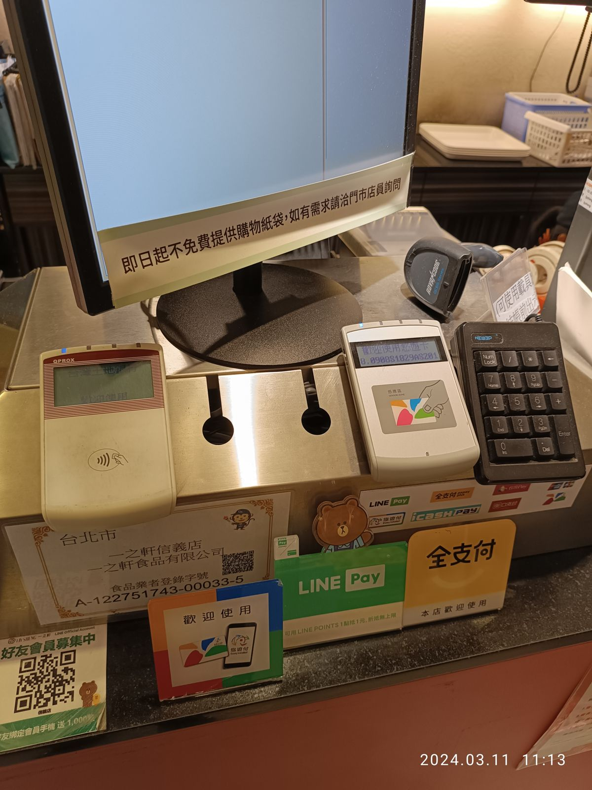
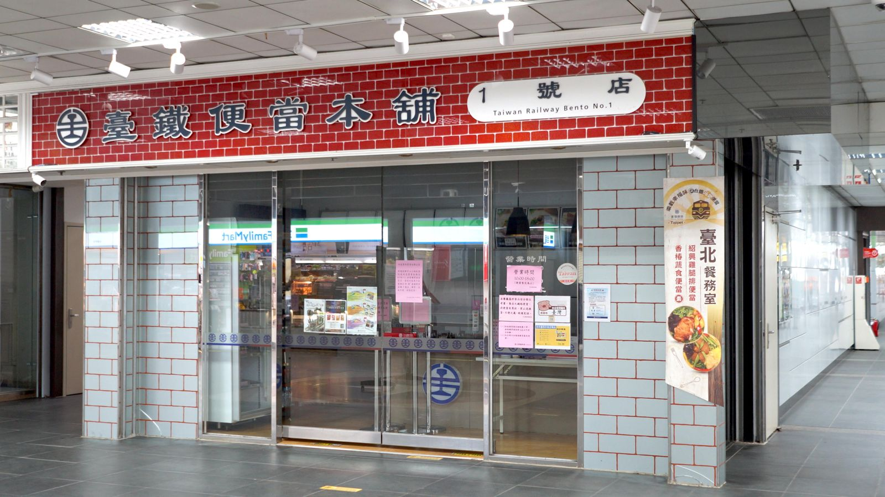

타이베이 식당 이지카드 결제, 어디까지 될까?
패스트푸드·만두 체인·음료 가게는 공식 사용처 목록에 많지만, 동네 식당과 노점은 여전히 현금이 기본입니다.
게시
타이베이 식당 이지카드 결제, 교통카드처럼 어디서나 될까요? 여행자 글을 보면 맥도날드·모스버거·버거킹 같은 체인에서는 잘 됐는데, 여행자에게 인기 있는 식당 중에는 안 받는 곳이 꽤 있었다는 이야기가 있어요. 이지카드 회사(悠遊卡公司)가 공개한 공식 사용처 목록을 기준으로 2026년 10월 현재 이지카드로 밥값을 낼 수 있는 체인과 계산대에서 확인하는 법, 현금을 꼭 챙겨야 하는 경우를 정리해봤어요.
01 · 타이베이 식당 이지카드, 한눈에 보기 (2026년 10월 기준)
| 공식 사용처 목록 | 계산 전 확인 | |
|---|---|---|
| 패스트푸드 체인 | 맥도날드·버거킹 전 매장, 모스버거 일반 매장 | 모스버거는 마트 안 일부 매장 제외 |
| 만두·훠궈 체인 | 八方雲集·石二鍋 전 매장, 鬍鬚張 일부 매장 | 鬍鬚張은 매장마다 확인 |
| 음료·카페 | 50嵐·清心福全·스타벅스 전 매장 등 | 대부분 바로 결제 |
| 역·푸드코트 | 臺鐵便當 전 매장, 大食代 푸드코트 | 백화점은 층·매장별로 다를 수 있음 |
| 동네 식당·노점·야시장 | 목록에 없는 곳이 대부분 | 현금 준비가 기본 |
공식 목록에는 음료·카페·식당·빵집·패스트푸드·아침 가게·푸드코트로 나뉜 체인이 올라 있어요. 다만 목록 페이지에도 실제 적용 매장과 결제 방식은 매장 설비에 따라 다르다고 적혀 있으니, 체인이라도 계산 전에 한 번 확인하는 편이 안전합니다.

02 · 공식 목록에 있는 식당 체인, 이렇게 적혀 있어요
맥도날드·버거킹 두 곳 모두 '전국 매장에서 이지카드 결제 가능'으로 안내돼 있어요. 버거킹은 이지카드 앱 결제(悠遊付)도 됩니다.
모스버거 전국 일반 매장에서 이지카드·悠遊付를 쓸 수 있고, 대형 마트 안 일부 매장은 제외라고 적혀 있어요.
팔방운집(八方雲集)·石二鍋 만두 체인 八方雲集과 1인 훠궈 체인 石二鍋는 전 매장 결제 가능으로 안내돼 있어 간단한 한 끼에 쓰기 좋아요.
루러우판 체인 鬍鬚張 '일부 매장'만 이지카드·悠遊付를 받는다고 적혀 있어요. 들어가기 전에 계산대 로고를 보세요.
臺鐵便當·大食代 기차역 도시락 臺鐵便當 매장과 푸드코트 大食代도 전 매장 결제 가능으로 올라 있어요. 50嵐·清心福全 같은 음료 가게와 스타벅스도 목록에 있습니다.
맥도날드·모스버거·버거킹 같은 체인은 이지카드를 받았지만, 여행자에게 인기 있는 식당 중에는 안 받는 곳이 많았다는 확인 글이 있어요. — 네이버 카페 여행자 글 2건을 요약했어요
03 · 계산대에서 이지카드 되는지 보는 법
로고 스티커부터 공식 안내 기준 이지카드는 4대 편의점 체인과 이지카드 로고를 붙인 가맹점에서 쓸 수 있어요. 계산대나 입구의 알록달록한 悠遊卡 로고, '歡迎使用' 안내판을 찾아보세요.
한마디로 묻기 로고가 안 보이면 "可以用悠遊卡嗎?(커이 융 유유카 마?)"라고 물어보면 돼요. 주문 전에 물어보면 계산할 때 당황하지 않습니다.
한 번에 1,500위안까지 가맹점 결제는 1회 NT$1,500, 카드 1장당 하루 NT$3,000이 상한이에요(2026년 10월 기준, 교통 요금은 제외). 여럿이 훠궈를 먹고 한 번에 내기에는 부족할 수 있어요.
잔액이 모자라면 결제 안 돼요 버스·MRT는 한 번(60위안 이내) 대신 내주는 기능이 있지만, 식당·가게 결제는 대납이 없다고 안내돼 있어요. 계산 전에 잔액을 확인하세요.

04 · 이지카드만 믿으면 곤란한 경우
노점·야시장·작은 식당 공식 목록은 주로 체인이라 동네 식당과 노점은 대부분 목록에 없어요. 이런 곳은 현금을 기본으로 생각하세요.
인기 식당도 예외 아님 유명한 곳이라고 이지카드를 받는 건 아니에요. 가고 싶은 식당이 있다면 가게 공식 안내나 현장 안내판으로 결제수단을 확인하세요.
단체·코스 식사 1회 1,500위안 상한 때문에 여럿이 먹는 자리에서는 신용카드나 현금이 더 편해요. 카드 결제 여부도 가게마다 다릅니다.
결제를 거절당했다면 로고가 있는데도 안 받아 준다면 체인 본사나 이지카드 고객센터에 매장·시간을 알려 문의할 수 있다고 공식 FAQ에 나와 있어요. 그 자리에서는 현금으로 내는 게 빠릅니다.
05 · 타이베이 식당 결제, 이렇게 준비하세요
이지카드는 넉넉히 충전 교통비에 체인 식당·음료값까지 쓸 생각이라면 편의점이나 MRT 역에서 미리 충전해 두세요. 카드 잔액은 최대 NT$10,000까지예요.
현금은 100·500위안권 위주로 노점과 작은 식당에서는 큰 지폐보다 작은 단위가 편해요. 요금은 방문 전 공식 안내를 확인하세요.
신용카드는 큰 결제용 레스토랑·백화점 식당가처럼 금액이 큰 곳은 신용카드가 편해요. 한 장이 안 될 때를 대비해 브랜드가 다른 카드를 챙기세요.
영업시간은 따로 확인 식당 영업시간은 방문 전 구글맵에 등록된 영업시간을 확인하세요.
교통에서 이지카드를 어디까지 쓸지는 타이베이 첫 여행, 이지카드만으로 충분할까?를, 잔액 확인과 충전은 이지카드 잔액 조회 글을 보세요. MRT를 신용카드로 탈 계획이라면 타이베이 MRT 신용카드 탑승, 가족 경비를 현금·카드로 나누는 법은 타이베이 가족여행 경비에 있어요. 식당은 타이베이 맛집 지도에서 고르고, 현금이 필요한 노점은 타이베이 노점 맛집, 공식 목록에 있는 팔방운집 매장 하나는 팔방운집 중샤오둔화점(八方雲集)에서 볼 수 있어요.
지도에서 타이베이 맛집도 확인해보세요
이지카드로 들를 체인과 현금이 필요한 노점을 지도에서 미리 골라 보세요.